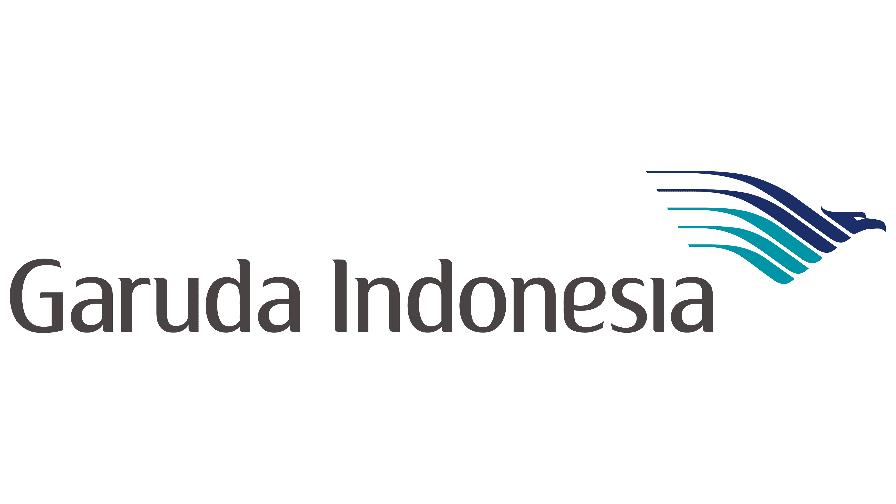

The Airline of Indonesia
Garuda Indonesia bermula dari penerbangan komersial pertama cikal bakal maskapai nasional dengan pesawat Dakota yang dibeli dari sumbangan emas rakyat Aceh pada tahun 1948.
Visi PT Garuda Indonesia (Persero) Tbk adalah menjadi kelompok penerbangan yang berkelanjutan dengan menghubungkan Indonesia dan sekitarnya sekaligus menghadirkan keramahan khas Indonesia.

Kantor pusat PT Garuda Indonesia (Persero) Tbk berlokasi di area Bandara Internasional Soekarno-Hatta, Tangerang, Banten, dengan kantor perwakilan di Jl. Kebon Sirih No. 44, Jakarta Pusat. Nomor Telepon: 0804 1 807 807 atau +62 21 2351 9999